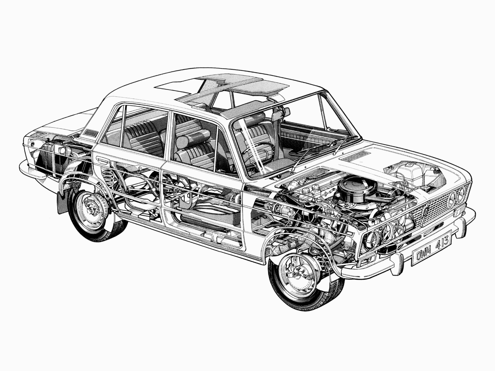

ВАЗ-2106 («Жигули», «шестёрка») — советский и российский заднеприводный автомобиль III группы
малого класса с кузовом типа седан.
История
Разработка ВАЗ-2106 началась специалистами Центра стиля Волжского автозавода в 1974 году как
«проект 21031» (по аналогии с только что освоенным в производстве ВАЗ-21011). Требования
технического задания на обновление модели 2103 сводились к сокращению использования
дорогостоящих хромированных и металлизированных деталей, а также к модернизации светотехники до
последних европейских стандартов при минимуме затрат. Экстерьер автомобиля, разработанный в духе
времени с использованием чёрных пластиков, был создан В. Антипиным, оригинальные задние фонари —
В. Степановым. Изменениям подверглись передняя облицовка («очки» фар стали самостоятельными
деталями, сама решётка изготавливалась из пластмассы и на ранних машинах дополнительно
покрывалась хромом), задняя панель багажника (появилась крупная утопленная прямоугольная ниша
под номерной знак), бамперы (уменьшенные в размерах «клыки» стали цельнопластиковыми, как и
ставшие самостоятельными деталями уголки бамперов), колпаки колёс, боковые указатели поворотов
(более крупные прямоугольные, на ранних машинах на задних крыльях также были красные катафоты
(на части экспортных машин они были выполнены как габаритные огни), идентичные по форме и
симметричные по расположению на кузове повторителям), вентиляционные решётки, заводской знак
(вписанный в чёрный прямоугольник; ранее прямоугольная эмблема уже применялась на ВАЗ-21011, но
была более крупной и с красным фоном).
Новшества в интерьере затронули обивку (в частности, низ обивки дверей и кнопка рулевого колеса
получили декоративную вязь с заводской эмблемой по центру) и подлокотники дверей (с 1977 года,
до этого устанавливались подлокотники от ВАЗ-2103); сиденья получили цельновелюровый верх, у
передних появились регулирующиеся по высоте подголовники (в удешевлённом исполнении (вариант 45)
допускалась установка комплекта сидений от ВАЗ-2103, но тоже дополненного подголовниками
спереди). Органы управления дополнили аварийной сигнализацией, подрулевым выключателем омывателя
лобового стекла и реостатом освещения панели приборов. На консоли появилась отдельная
контрольная лампа низкого уровня тормозной жидкости (на ВАЗ-2103 она совмещена с индикатором
стояночного тормоза (мигание соответствует затянутому тормозу, постоянное свечение — низкому
уровню жидкости в бачке)). Улучшенные комплектации снабжались радиоприёмником, обогревом заднего
стекла и красным противотуманным фонарём, крепившимся под задним бампером слева или справа (на
экспортных праворульных экземплярах).
В задних фонарях ВАЗ-2106 впервые для советского автопрома были объединены в цельном корпусе
секции указателей поворотов, габаритных огней, стоп-сигналов, огней заднего хода и катафотов. В.
Антипин также отмечал, что случай, когда на легковом автомобиле оба задних фонаря конструктивно
скомбинированы с освещением номерного знака, был на его памяти единственным в мировой практике и
заслуживал отдельного патента.
Для автомобиля был подготовлен вариант двигателя 2103, у которого по образцу модификации 21011
диаметр цилиндров был увеличен с 76 до 79 мм, что позволило достичь рабочего объёма 1,57 л.
Новый длинноходный мотор показал на 12 % больший крутящий момент, по сравнению с базовым (причём
при существенно меньших оборотах), однако его максимальная мощность («брутто») по действующим в
то время стандартам составила только 79 л. с. вместо расчётных 80 в силу ограниченных
характеристик системы впуска, которую ради унификации с другими двигателями семейства оставили
без изменений. Тем не менее, трансмиссию к новому двигателю всё же адаптировали, сначала
создав специальную версию коробки передач, отличающуюся уменьшенными передаточными числами на
первых трёх ступенях, а впоследствии комплектуя часть автомобилей редуктором с передаточным
числом главной передачи, уменьшенным до 3,9. Доработкам подверглось и сцепление: было
увеличено усилие диафрагменной пружины и увеличена площадь фрикционных накладок. Новый силовой
агрегат с минимальными изменениями был использован для готовящейся в то время к производству
модели ВАЗ-2121 «Нива» (другими заметными заимствованиями «Нивы» у ВАЗ-2106 стали комплект
световой сигнализации (кроме фар) и подголовники передних сидений).
Подобно ВАЗ-2103, новинку планировалось сопровождать двумя менее мощными модификациями; для
кузова уже традиционно предусматривалась возможность исполнения с правым расположением руля. Как
и в случае с ВАЗ-21011, по маркетинговым соображениям появление модернизированной версии модели
2103 отнюдь не означало немедленное снятие с производства её предшественницы (более того, в
1982—1984 годах ВАЗ выпускал одновременно три «люксовых» автомобиля: 2103, 2106 и 2107). В свете
этих обстоятельств первоначальное обозначение обновлённого автомобиля как 21031, несмотря на
свою бесспорную логичность, выглядело малоперспективным для будущего использования и было
заменено на 2106. Уже использовались позиции 21032, 21033, 21035 и 21036, пяти оставшихся
пятизначных чисел заведомо не хватало для обозначения шести новых сочетаний трёх двигателей и
двух лево- и праворульных кузовов, тем более с учётом возможного появления новых
модификаций[источник не указан 2696 дней]. «Освободившийся» же индекс 21031 был использован для
обозначения «настоящей» модификации 2103 (ВАЗ-21031 не упоминается в официальном перечне
модификаций модели 2103. Её условность подчёркивается даже тем фактом, что для идентификации
этих автомобилей использовались обычные заводские таблички 2103, где нанесённые краской индексы
модели и двигателя были просто дополнены выбитыми в металле цифрами «1»), укомплектованной новым
двигателем (тоже временно обозначавшимся как «ВАЗ-21031») и выпущенной ради получения
потребительских отзывов о нём очень небольшой партией (150—200 шт.) летом 1975 года (у ВАЗ-2106
первых партий двигатели на заводской табличке официально маркировались краской как «ВАЗ-21031»).
Отличительной особенностью этих машин была красная или жёлтая окраска головки блока цилиндров
двигателя, в зависимости от версии установленной коробки передач (соответственно, с прежним
рядом передаточных чисел или с адаптированным).
Первый автомобиль ВАЗ-2106 был собран на главном конвейере в канун наступающего 1976 года,
однако массовый выпуск новинки начался на третьей линии конвейера лишь около полутора месяцев
спустя — с 21 февраля. 28 декабря того же года экземпляр этой модели стал трёхмиллионным
автомобилем, выпущенным Волжским автозаводом, а 3 июня 1978 года — четырёхмиллионным. В
сентябре 1977 года модели был присвоен Знак качества. В июне 1979 г. один из ВАЗ-2106,
отправленный в ЧССР, стал миллионным советским автомобилем, поставленным в страны СЭВ.
За время производства в автомобиль неоднократно вносились мелкие изменения. В 1977 году были
слегка изменены дефлекторы отопителя, появилась мнемоника контрольных ламп в спидометре и в
тахометре, в 1981 году её обновили, попутно заменив пиктограммами пояснительные надписи в других
контрольных приборах. С 1980 г. все «Жигули» стали оснащаться карбюратором «Озон» вместо
прежнего «Вебера». В 1982 году видоизменился выключатель аварийной сигнализации. После снятия с
производства модели 2103 на «шестёрках» в течение нескольких лет частично сменился комплект
молдингов: поясные элементы снабдили концевыми фиксаторами, вместо хромированных нижних
молдингов появились чёрные пластиковые, была исключена из оформления окантовка колёсных арок и
хромирование ободков боковой светотехники — указателей поворотов и катафотов задних крыльев
(последние были упразднены в 1987 г.). В 1986 году ВАЗ-2106 получил задние тормоза от ВАЗ-2105,
а ещё через год — и коробку передач от той же модели, ещё одним заимствованием от неё стали
вентиляционные решётки задних стоек кузова. Некоторые упрощения претерпела схема
электрооборудования: с 1987 г. встроенные в торцы передних дверей красные фонари были заменены
катафотами, а с 1993 г. из схемы было исключено реле мигания контрольной лампы стояночного
тормоза. К концу 80-х упразднили хромирование водостоков, в 1990 г. появились первые заводские
машины со ступичными колпачками вместо колпаков дисков, позже отказались от грязезащитных
козырьков между кузовом и бамперами. Фон заводского знака вместо вишнёвого стал чёрным. Из
интерьера постепенно исчезли имитации под «хром» и «дерево», сошли на нет различные цветовые
вариации обивки салона. В 1992 г. ради дальнейшего удешевления модели завод даже пытался
отказаться от боковых молдингов, однако это «новшество» было быстро отменено. Во второй половине
90-х стали устанавливаться инерционные ремни безопасности, рулевое колесо от поздних версий
семейства 2105, штатный противотуманный фонарь и опциональные передние электростеклоподъёмники.
Экземпляры последних лет выпуска утратили хромировку ободков задних фонарей, очень часто не
хромировалась и решётка радиатора. «Ижевские» машины комплектовались передними сиденьями от
ИЖ-2126.
«Шестёрка» довольно долгое время (с 1976 по 1982 год) оставалась наиболее престижной моделью в
гамме «Жигулей», заслужив репутацию автомобиля повышенной комфортабельности и надёжности.
Конструкция
Двигатель
Устанавливается бензиновый, четырёхтактный, четырёхцилиндровый, рядный, восьмиклапанный
двигатель с верхним расположением распределительного вала. Некоторые особенности конструкции:
Цилиндры расположены вертикально в один ряд и объединены в блок.
Сверху на блок устанавливается общая для всех цилиндров головка блока.
Снизу блок цилиндров закрыт стальным штампованным поддоном, который одновременно служит ёмкостью
для масла.
Коленчатый вал вращается в пяти опорах в блоке цилиндров.
Трансмиссия
На автомобиле установлена механическая коробка передач с четырьмя передачами переднего хода и
одной заднего. На автомобилях более позднего года выпуска — пятиступенчатые коробки передач (с
пятью передачами переднего хода и одной заднего).

Некоторые элементы конструкции:
Коробка передач состоит из картера и задней крышки, отлитых из алюминиевого сплава и соединённых
шпильками с гайками.
Внутри картера на подшипниках качения смонтированы первичный, вторичный и промежуточный валы.
Механизм переключения состоит из вилок со штоками.
Подвеска
Передняя подвеска — независимая, двухрычажная, с винтовой цилиндрической пружиной,
телескопическим гидравлическим амортизатором и стабилизатором поперечной устойчивости.
Некоторые элементы:
Ось нижних рычагов закреплена двумя болтами на поперечине, которая крепится к передним
лонжеронам.
Между осью и поперечиной установлены два пакета дистанционных шайб и регулировочных прокладок,
задающие углы продольного и поперечного наклона оси поворота переднего колеса.
Стабилизатор поперечной устойчивости (торсион из пружинной стали) предназначен для уменьшения
бокового крена автомобиля при поворотах.
Тормозная система
Автомобиль оборудован двумя тормозными системами — рабочей и стояночной. Рабочая система имеет
гидравлический привод и обеспечивает торможение автомобиля во время движения. Привод стояночной
тормозной системы — механический, тросовый, на тормозные механизмы задних колёс.
Некоторые элементы:
Тормозные механизмы передних колёс — дисковые.
Тормозные механизмы задних колёс — барабанные с двухпоршневыми колесными цилиндрами и
автоматической регулировкой зазора между колодками и барабаном.
Модификации
ВАЗ-21061 — с двигателем ВАЗ-2103.
ВАЗ-21063 — с двигателем ВАЗ-21011 улучшенной комплектации, с датчиком давления масла и
электровентилятором вместо приводимой ремнём крыльчатки.
ВАЗ-21065 — модернизированная версия с улучшенной комплектацией, выпускавшаяся в 1993–2002
годах. От базовой модели отличалась более мощным генератором, пятиступенчатой коробкой передач,
редуктором заднего моста с передаточным числом 3,9, бесконтактной системой зажигания,
карбюратором «Солекс», галогенными фарами, обивкой и подголовниками сидений.
Модель
Модель я взял у Пользователя morfinmaus
У него ещё много таких крутых моделей и я их использую для сайта. Спасибо morfinmaus!